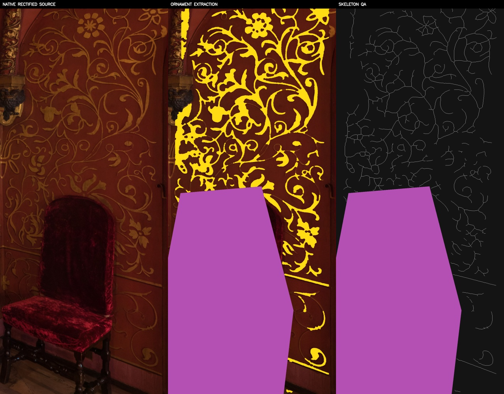
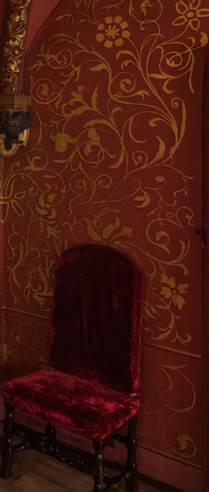

TEREM — TRM-0108 Native Source QA
Источник: Kremlin tour, scene_232, native cube face 5730×5730. Анализируемая поверхность выпрямлена напрямую из нативной грани: 1040×2440 px. Слева — источник, в центре — первичное выделение орнамента, справа — skeleton QA. Пурпурная зона — UNKNOWN (кресло), не negative space.

Чистый нативный фрагмент
